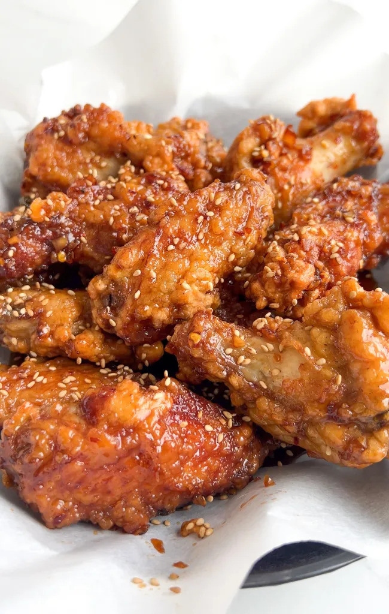

Soy Garlic Korean Fried Chicken

Description
If you've ever had Bonchon's famous Soy Garlic wings, then you've come to the right place.
These will hit the spot if you've been craving that delicious korean fried chicken.
Ingredients
Chicken and Breading
- Chicken wings (wings and drumettes)
- Cornstarch
- Garlic powder
- Baking powder
Soy Garlic Glaze
- Garlic
- Onion
- Ginger
- Mirin
- Brown Sugar
- Soy Sauce
Steps
- Combine all glaze ingredients into a pan and bring to a
boil and then lower to a simmer until sauce becomes slightly thick.
- Pat chicken dry and season very lightly with salt and garlic powder, there is plenty of salt in the soy sauce
- Place all the dry ingredients in a plastic bag and seal and shake to dredge our chicken
- Tap off excess cornstarch, and prepare to double fry. Oil is ready when a chopstick is placed in inside the oil bubbles.
- The goal is to double fry, so fry for 6-8 minutes and let rest on a wire rack, then fry for another 4-5.
- Now toss freshly fried chicken into a metal bowl with your glaze and toss vigorously to coat. Finally, enjoy!